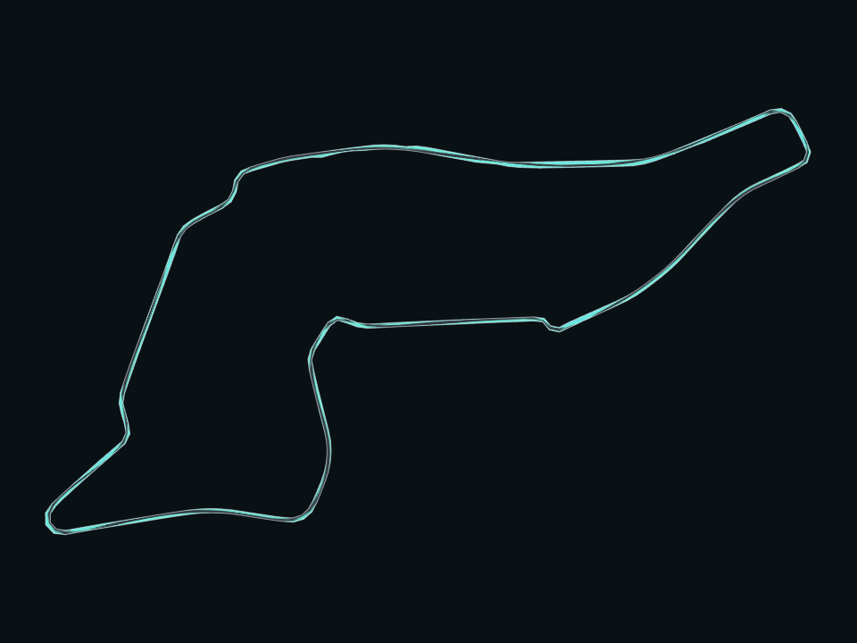
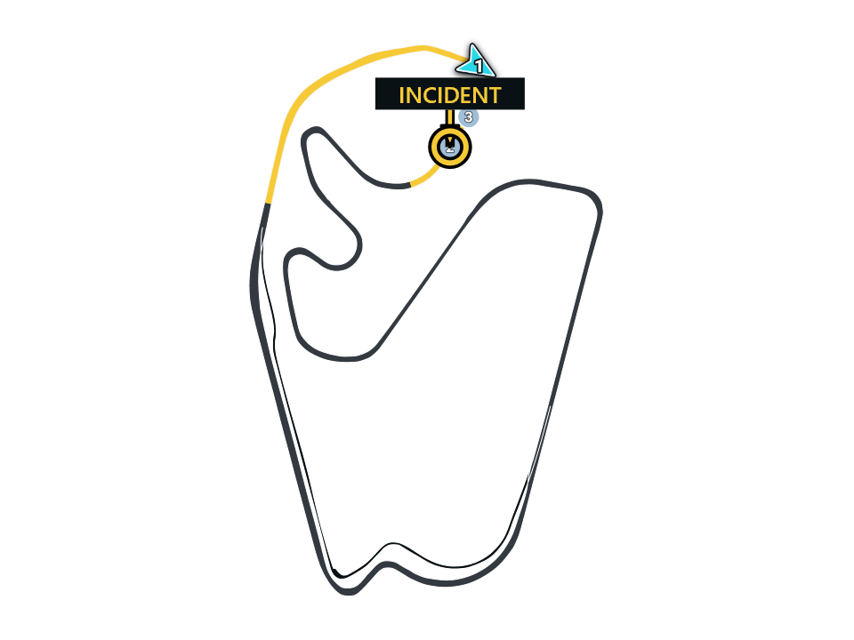
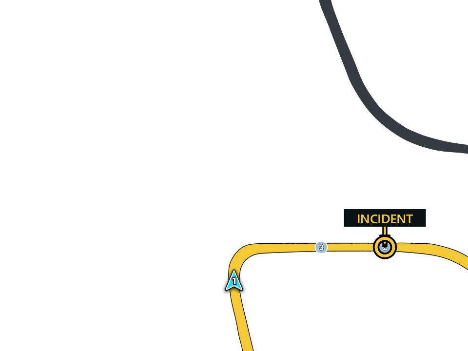

Rookline Drive

Your cockpit HUD for Le Mans Ultimate. SteamVR & desktop
Download Drive free


Where’s the drying line?
At Imola, Drive shows a drier line forming while the rest of the road stays damp.
Explore the Imola surface ↗


See where the yellow starts.
The map highlights the affected road and marks the slow car while other traffic passes.
Read the track map ↗Set up your cockpit.
Recorded weather replays
Imola, Daytona and Interlagos · Recorded conditions and estimated surface wetness.

DryDampSlightly wetWetVery wetExtremely wet
Replay paused at the beginning.
INTERLAGOS / AFTER THE STORM
Recorded weather. Estimated surface.